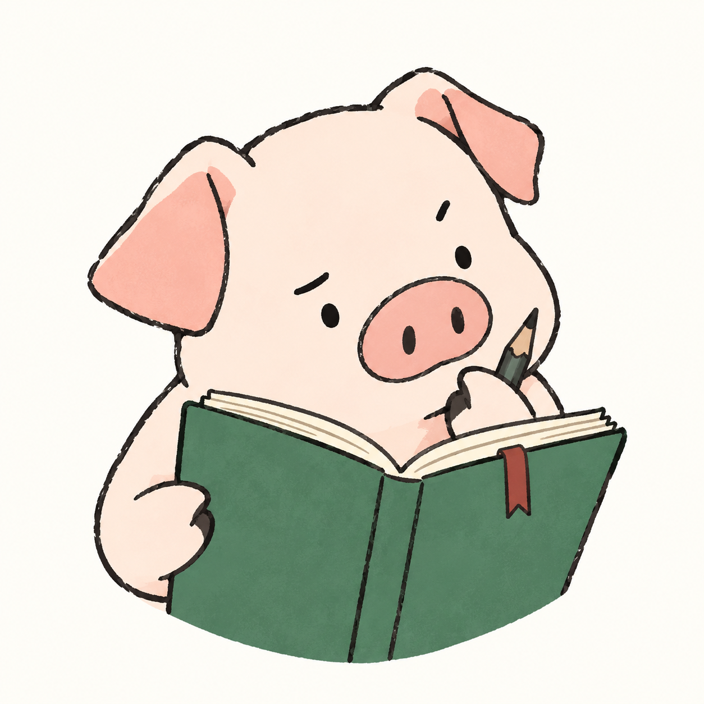
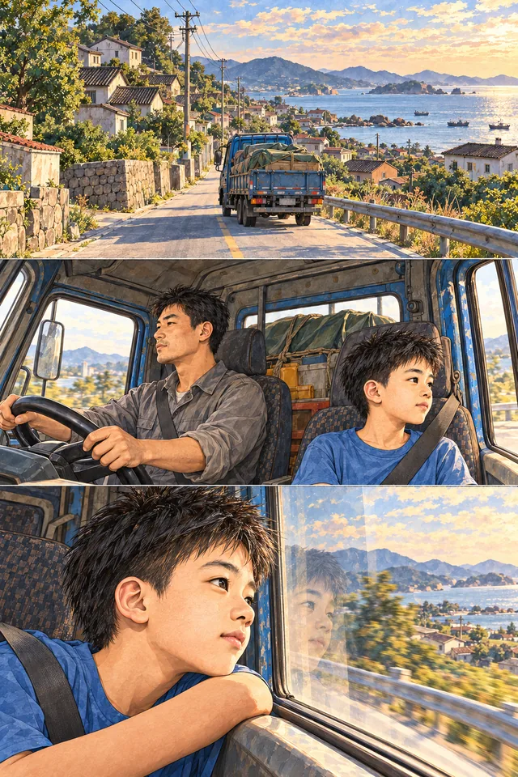

A PERSONAL COLLECTION
我的故事My storyMon histoireMi historia
一路走着，也一路做着。A life in the making.Une vie qui se construit.Una vida en construcción.
有些想法写成文章，有些做成产品。
还有一些，留在路上的风景里。Some ideas become essays. Others become products.
And some stay with the places along the way.Certaines idées deviennent des essais, d’autres des projets.
D’autres encore restent dans les paysages du chemin.Algunas ideas se vuelven ensayos, otras, proyectos.
Y algunas se quedan en los paisajes del camino.



01 / THINK · BUILD · WRITE
项目与日常Projects & notesProjets & notesProyectos & notas
在城市里，在火车上，在想把一个问题解决掉的时候。In cities, on trains, and while figuring things out.En ville, dans un train, en cherchant des réponses.En ciudades, en trenes, buscando respuestas.
我的个人网站：留下旧版，继续向前
保存旧版网站与真实截图，并记录新版的头衔、成长漫画、四语文章、探索地图和滚动动效。
最近在写公众号：AI 的问题，也绕回了人自己
一边做 AI 工具，一边写 RSI 与 AI Fear。从一次英文面试问题出发，重新想人、目标与控制之间的关系。
Language House：把筹备收拢到三个重点
把此前的想法与研究整理成独立项目，当前围绕 AI 备课台、学生管理系统和前期调研推进。
Lessonfold：让备课成为一条完整流程
从一节示例课出发，完善材料生成、教师审核和讲义阅读，继续推进与学生管理系统的连接。
把 AI 算力知识整理成可检索的手册
完成 34 组卡型资料、搜索筛选与三卡对比，把硬件知识和行业场景放进一套可持续更新的工具。
Sales Buddy：开完会以后，下一步是什么？
从统一客户档案的 Skills，走到可以持续经营客户的工作台；让研究、沟通和下一步行动接在一起。
给四个销售 Skill，留一份共同的记忆
公司研究、会议梳理、方案推荐各有擅长的事，先让它们写进同一份客户档案。
做了一个 Skill，找回自己写过的东西
笔记越来越多，记住“以前写过”比重新找到正文更容易。让 Agent 先搜索，再读文档，再带着依据回答。
在巴黎，把那些普通的一天做成星球
学习、专注、运动和晚间日记，能不能在重复中留下看得见的变化？我做了一个小小的习惯宇宙。
一节课之后，下一节应该从哪里开始？
把上一节课的错词、重点和教师批注带进下一份备课文档，给后来的教学工作台留下最早的思路。
去里昂的火车上，我想把攻略做轻一点
车窗外的风景在走，手机里的攻略却越翻越多。后来，我把这种麻烦整理成一个学生旅行规划 Skill。
在巴黎，我想知道一个词到底是什么感觉
字典里已经查到了意思，对话里却还有语气、距离和文化。于是做了一个英法西三语的语境小工具。
还没有找到这一篇。
试试其他关键词，或切换到「全部」。
02 / 小朱还在想 · WECHAT NOTES
把想法，写给更多人看。Thoughts, made public.Des idées, rendues publiques.Ideas, para compartir.
公众号是另一张工作台：把做产品时遇到的问题，写成可以慢慢读的文章。A second workbench for turning product questions into essays.Un second atelier pour transformer les questions en essais.Otro taller para convertir preguntas de producto en ensayos.
RSI和AI Fear，呼吁AI减速后的第21天
从一次面试问题出发，重新思考 RSI、AI Fear 和人的控制权。
在微信阅读全文 ↗AI 终于要从屏幕里爬出来了？
小朱还在想 · 公众号文章
在微信阅读全文 ↗I wanted to see the world.
A coastal village, the long road to confidence, and the languages that opened my world. Sixteen illustrated chapters, from childhood to what I am building today.

Read my storyEnglish narration · Read at your own pace.